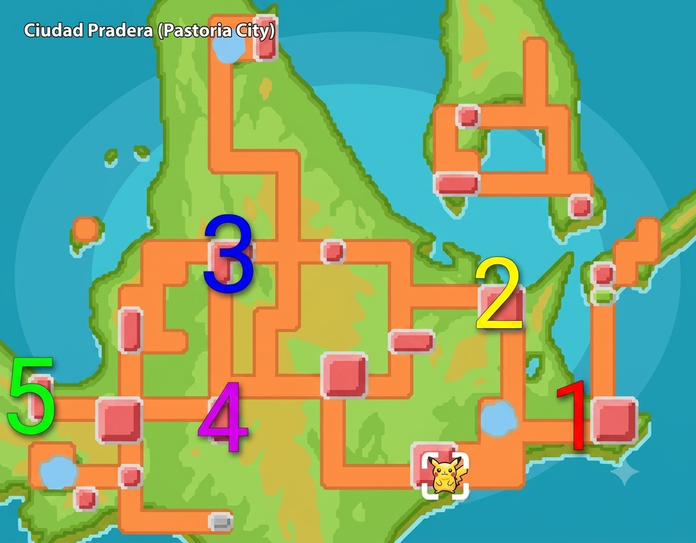
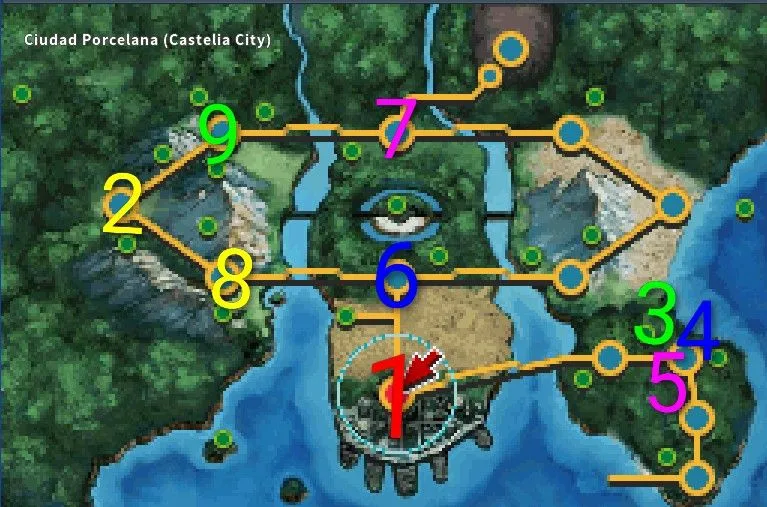
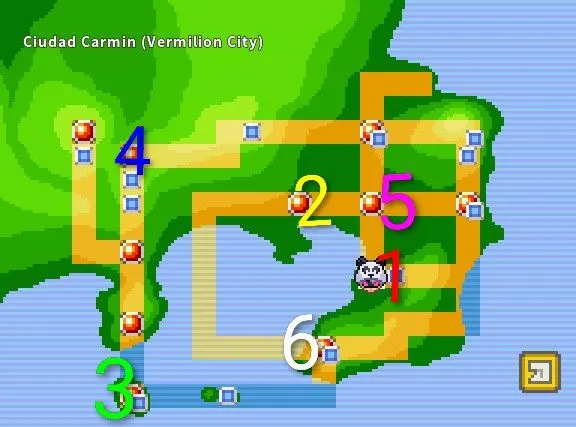
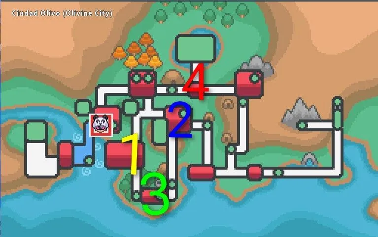

Enrutamiento y Combates por Región
Ruta Hoenn (Sin Curaciones)
El primer checkpoint y una de las regiones más consistentes. Se recomienda optimizar el uso de Teletransporte Ocarina.

Si Excadrill muere por Lucario, cambia Blastoise inmediatamente. Si Aerodactyl cae por Mismo Destino, entra Typhlosion.
Usa Salpicar para limpiar rápidamente el campo.
¡Cuidado! Si Chansey o Blissey están en el campo de batalla, saca a Typhlosion e intercambia por Excadrill para romperlos.
Si Pelipper o Altaria lideran, usa Viento Hielo con Vanilluxe. Si cae un lead, saca a Blastoise para limpiar con Salpicar/Ventisca.
Ruta Sinnoh (Sin Curaciones)
Optimiza los cambios de clima. Evita el gimnasio de Punta Nieve debido a las molestas habilidades de evasión (Froslass) y absorción (Heatran).

Si lidera un Lanturn con Absorción de Agua, saca a Blastoise por Vanilluxe y luego a Excadrill.
Usa Día Soleado con Aerodactyl en el primer turno para maximizar los Estallidos de Typhlosion.
Si sale el sol, cambia Typhlosion por Vanilluxe para contrarrestar la velocidad de los pokes tipo planta con clorofila.
Si Excadrill está en el campo, cambia Aerodactyl por Vanilluxe. Si Vanilluxe cae, reintroduce a Aerodactyl. Si Excadrill cae, entra Blastoise.
Si hay tormenta de arena, usa Día Soleado con Aerodactyl. Si persiste la lluvia extrema...
Ruta Teselia (Unova Sweep)
Enfréntate a los desafíos finales optimizando los counters del equipo de Unova. Cuidado con los climas de arena automáticos en esta región.

Usa Estallido y Avalancha. El fuego y la roca pulverizan por completo a su equipo de tipo Bicho.
Salpicar con Blastoise hace un OHKO masivo a sus tipos Tierra. Togekiss neutraliza los Terremotos rivales al ser Volador.
Usa Avalancha y Ventisca. El tipo Volador de Gerania cae instantáneamente ante la combinación Roca e Hielo.
Estallido y Avalancha eliminan con facilidad a la gran mayoría de sus Pokémon de tipo Hielo.
Saca provecho de Vanilluxe con Pañuelo Elección y usa Ventisca de forma masiva para contrarrestar a su equipo de Dragones.
Ruta Kanto (Optimizada)
Prioriza daño masivo rápido. Evita perder turnos con climas innecesarios y limpia usando la cobertura elemental de Blastoise y Typhlosion.

Usa Vozarrón y Ventisca. Si el clima cambia a lluvia pesada, saca a Vanilluxe para reiniciar con Granizo o mete a Excadrill.
Terremoto de Excadrill con Rompemoldes limpia los robustos y levitantes de tipo Eléctrico sin problemas. Aerodactyl es inmune gracias a Volador.
Usa Día Soleado con Aerodactyl en el primer turno para potenciar el Estallido de Typhlosion y barrer instantáneamente.
Vozarrón + Estallido barren los frágiles Pokémon de tipo Psíquico. Cuidado con posibles usuarios de Banda Focus.
Spam de Avalancha y Estallido. Si hay amenazas con Levitación o Robustez, cambia a Excadrill.
Ruta Johto (Fast Run)
Ruta directa. Controla las amenazas físicas con retrocesos provocados por Avalancha o parálisis/daño masivo neutro.

Estallido y Vozarrón eliminan las defensas normales. Si sale un tipo Roca/Acero de imprevisto, cambia a Excadrill de inmediato.
Estallido limpia rápido. Togekiss es inmune a los movimientos de tipo Tierra y resiste Sombra Vil.
El daño por STAB Volador y Hada de Togekiss es letal para sus Pokémon de tipo Lucha.
Usa Día Soleado para contrarrestar cualquier counter de agua y potenciar a Typhlosion contra el tipo Acero.
Usa Viento Hielo y Ventisca con Vanilluxe para congelar y barrer a sus Dragones.